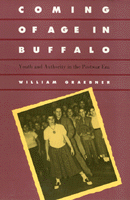

Defining Youth Culture in postwar era New York
Defining Youth Culture in postwar era New York


 Defining Youth Culture in postwar era New York
Defining Youth Culture in postwar era New York

|  |
Coming of Age in BuffaloYouth and Authority in the Postwar EraWilliam Graebnerpaper EAN: 978-1-56639-197-9 (ISBN: 1-56639-197-0) |
Association of American University Presses Book Jacket Award, 1990
"Graebner provides a carefully nuanced discussion of the music, clubs, fraternities, gangs, dress codes, slumber parties, and other teenage institutions that developed in this whirligig of influences."
—History of Education Quarterly
Pegged pants poodle skirts, record hops, rock �n� roll, soda shops: in the interval between the bombing of Hiroshima and the assassination of John F. Kennedy, these were distinguishing marks of the "typical" postwar teenager-if there was a "typical" teenager. In this richly illustrated account of Youth in postwar Buffalo, William Graebner argues that the so-called Youth culture was really a variety of "disparate subcultures, united by age but in conflict over class, race, ethnicity, and gender." Using scrap books, oral histories, school Yearbooks, and material culture, he shows how Buffalo teenagers were products of diverse and often antagonistic subcultures. The innocuous strains of "Rock Around the Clock" muffled the seething gang loyalties and countercultural influence of James Dean, Marlon Brando, and Buffalo�s own "Hound Dog" Lorenz. Racial antipathies once held in check spilled out on Memorial Day, 1956, when white and black Youth clashed on board a take Erie pleasure boat in a "riot" that recast the city�s race relations for decades to come.
While exploring the diversity within Youth subcultures, Graebner examines the ways in which adults—educators, clergy, representatives of the media, and other authorities—sought to contain this generation. The Hi-Teen Club, Buffalo Plan dress code, record hops, graduation ceremonies, film censorship, and restrictions on secret societies and on corner lounging were all forms of social engineering that reinforced social and economic boundaries that were at the heart of the dominant culture. The prevailing adult influence on activities, attitudes, and style served to redirect the "misguided Youth" of the fifties and to obliterate their image from public memory. Although the media still portrays this decade as the golden age of cultural homogeneity, the diversity in musical preferences, hair and clothing styles, and allegiances to disc jockeys suggest the wide diversity of Youth experiences and challenges to adult authority that were part of coming of age in postwar America.
"Graebner dips into various youthful experiences: music and dress, cars and high school fraternities, church-sponsored 'teen lounges' and street corner loungers....Illustrating all this is a stunning collection of photographs of teen life....he reminds us once again that there is a lot to be learned about any society by imagining it through the experiences of those being initiated into it."
—The Journal of American History
"William Graebner provides compelling evidence that there was no unified or national 'youth culture' in the postwar period. Arguing that class, race, and ethnicity provided more significant meaning for teenagers in Buffalo, New York, Graebner has written an impressive book with prolific illustrations to prove his point.... Well-documented local studies like this one provide desperately needed information for grounding our understanding of teenagers in postwar America. This is required reading for anyone interested in youth, popular culture, schooling, or the postwar period. Graebner also contributes to debates about the hegemony of popular culture through his skepticism that ordinary people are able to subvert the dominant culture. Where others see resistance, he sees little room for successful challenges."
—Wini Breines
Preface
1. Themes
2. Culture and Subculture
3. Social Engineering
4. Portents
Notes
Index
 | William Graebner is Professor of History at the State University of New York, College at Fredonia. He is the author of several books and co-editor (with Leonard Richards) of The American Record: Images of the Nation's Past. |
© 2015 Temple University. All Rights Reserved. This page: http://www.temple.edu/tempress/titles/571_reg.html.